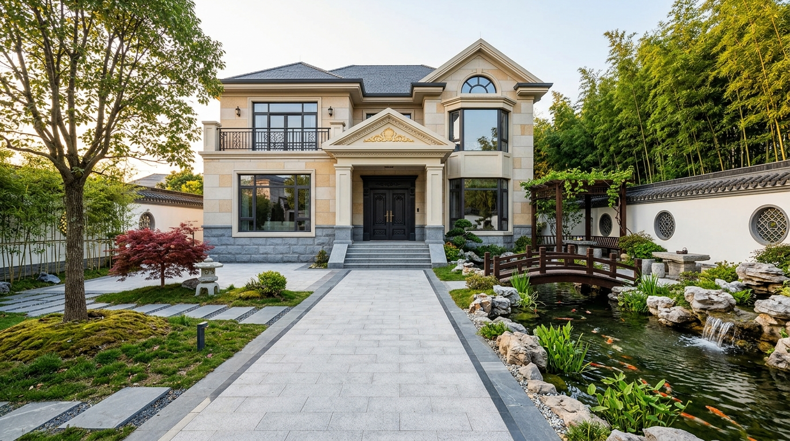
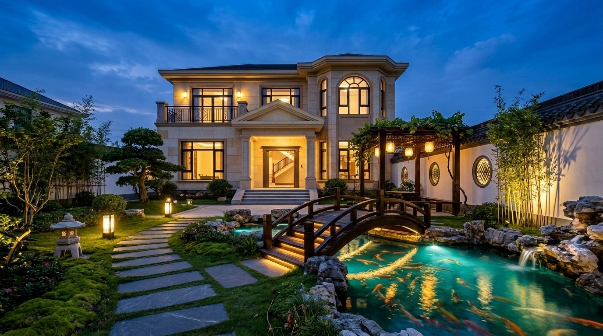
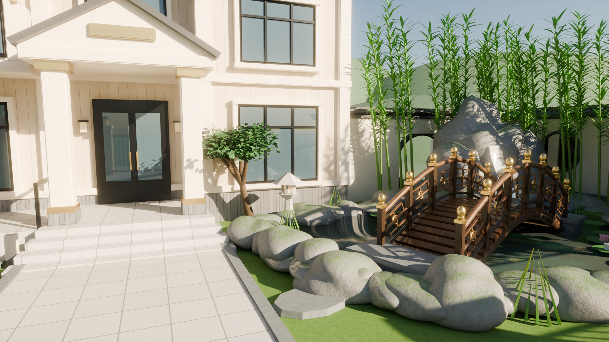
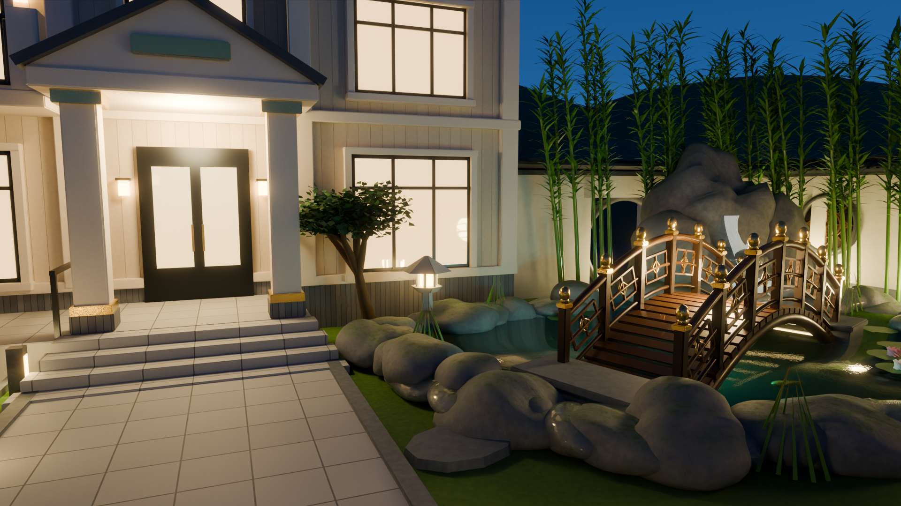
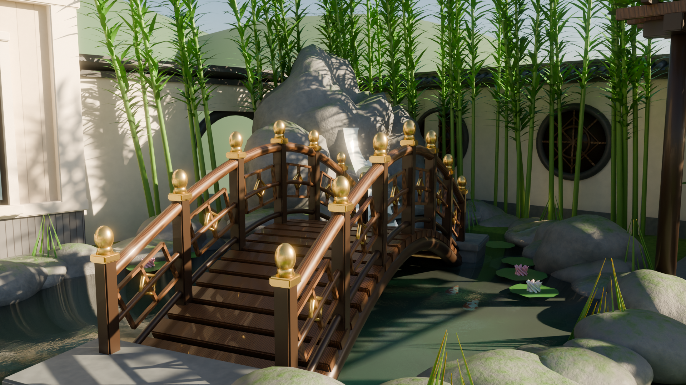

入户主轴 · 360° 实景漫游
真实光线折射活水、摇曳翠竹投影与昼夜灯光演绎
东侧大片泥地重构为下挖自然驳岸水池，太湖石三层叠水增氧，10 尾锦鲤与睡莲荷叶相映成趣。
传统中式回纹栏板与铜制莲花望柱，踏步暗藏暖光灯带，优雅衔接中央主轴与东南角茶亭。
素水泥东墙升级白墙小青瓦压顶 + 镂空海棠花窗与月洞门，成排翠竹在墙面投下诗意竹影。
左右拖动中间滑块，实时对比晴日与暮色灯光氛围




